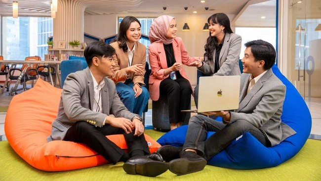

Abdee Pastikan Siap Tampil untuk Konser Ulang Tahun ke-41 Slank
Purwakarta, AboutNews-- PT Bank Rakyat Indonesia (Persero) Tbk. (BRI) kembali mencatatkan prestasi gemilang dengan meraih penghargaan sebagai salah satu perusahaan terbaik untuk bekerja di kawasan Asia-Pasifik. Pengakuan ini diberikan melalui daftar "Best Employers Asia-Pacific 2025" yang dirilis oleh Financial Times (FT) bekerja sama dengan penyedia data global, Statista. Masuknya BRI dalam daftar Best Employers Asia Pacific 2025 menempatkan perusahaan ini sejajar dengan perusahaan-perusahaan terkemuka lainnya dalam daftar seperti Meta, JP Morgan Chase, Apple, Alphabet, Toyota.
Pencapaian juga ini sekaligus memperkokoh reputasi BRI sebagai organisasi yang tidak hanya inovatif tetapi juga berfokus pada pengembangan sumber daya manusia (human capital). Mengutip website resmi Financial Times, proses seleksi pemeringkatan ini dilakukan melalui survei antara Mei hingga Juli 2024 dengan melibatkan lebih dari 50.000 karyawan dari berbagai negara di Asia-Pasifik, termasuk Amerika Serikat.
Kemudian, Indonesia, Australia, Hong Kong, India, Jepang, Makau, Malaysia, Selandia Baru, Filipina, Singapura, Korea Selatan, Taiwan, Thailand dan Vietnam. Direktur Human Capital BRI Agus Winardono menyatakan bahwa penghargaan tersebut mencerminkan komitmen BRI dalam menciptakan lingkungan kerja yang mendukung pertumbuhan karyawan. "Kami mengapresiasi dan sangat bangga atas penghargaan ini yang membuktikan bahwa BRI terus berupaya memberikan ruang yang terbaik bagi karyawannya. Budaya kerja yang inovatif, dan kolaboratif merupakan prioritas utama kami," ujar Agus di Jakarta.
Syarat perusahaan yang dapat ikut dalam survei ini tidak harus memiliki kantor pusat di kawasan Asia-Pasifik, tetapi harus memiliki setidaknya 1.000 karyawan dan beroperasi di dua negara atau wilayah yang tercakup dalam survei tersebut. Adapun, penilaian dilakukan berdasarkan dua indikator utama. Pertama, evaluasi langsung melalui skala 0-10 untuk mengukur seberapa besar karyawan akan merekomendasikan perusahaan mereka kepada teman atau keluarga. Kedua, evaluasi tidak langsung, di mana responden menilai perusahaan lain dalam sektor serupa, baik secara positif maupun negatif.
Tercatat, lebih dari 300.000 penilaian dikumpulkan dari karyawan di berbagai perusahaan yang berpartisipasi dalam survei ini. Penilaian-penilaian ini digabungkan untuk menghasilkan skor keseluruhan bagi masing-masing perusahaan yang dievaluasi. Selain dua indikator utama tersebut, survei juga mempertimbangkan faktor-faktor lain seperti kondisi kerja, gaji, peluang pengembangan karier, dan reputasi perusahaan. Setiap pernyataan yang diberikan dinilai berdasarkan tingkat persetujuan karyawan, yang diukur dengan skala lima poin. "BRI berkomitmen untuk terus bertransformasi dengan selalu menyelaraskan strategi human capital dengan perkembangan bisnis Perusahaan serta terus berupaya untuk menyediakan lingkungan kerja yang saling menghormati, bebas dari diskriminasi untuk mempertahankan produktivitas selama bekerja," ujar Agus.